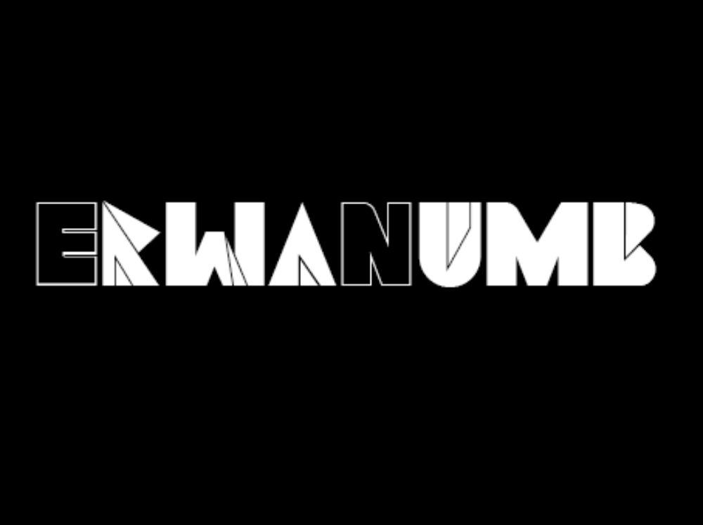

21h - 22h30
Télécommiens, Alumnis, personnel et invités.
Buffet gratuit
Champagne à prix pot
Magicien de close up
Intervention des différentes associations (théâtre d'improvisation, démonstrations de rock et de salsa, ...)

ErwanNumb
Erwan Numb commence à mixer près de Montpellier, où il privilégie les sons Minimal/Minimal-House et Neotrance, son style s'élargit lorsqu'il s'installe dans les discothèques lyonnaises, puis parisiennes, pour proposer des mix aux sonorités Deep-House/Progressive-House. Fort de son expérience dans les discothèques de la capitale, Erwan Numb sait s'adapter à un public large et diversifié. Préparez-vous à un mix inoubliable où l'ambiance ne cessera de monter !
Ian Osborn & Nicolas Francoual
Ian Osborn & Nicolas Francoual font partie des figures montantes de la scène électronique française. Grâce à leur énergie et leur incroyable talent, ils ont pu notamment jouer ces derniers mois un peu partout en France et à l'étranger aux cotés des plus grands djs. Par ailleurs, Ian et Nicolas ne sont pas seulement DJ, ils sont également producteurs / remixeurs. Entre 2010 et 2012, ils ont notamment produit plus d'une cinquantaine de remixes qui sont sortis sur de prestigieux labels. Une chose est sure suivez de près, de très près ces deux originaux!!!
OVERWERK
Edmond Huszar est OVERWERK. Ce producteur et compositeur de 23 ans originaire de London (Canada) rentra dans le monde de l'électro avec la sortie de son EP "The Nth Degree". Aujourd'hui, un an plus tard, il continue sur sa lancée avec son nouvel EP "After Hours".
Buzz Yeagger
Fraîchement débarqué des soirées étudiantes les plus délirantes de Nancy où il a pu peaufiner sa maîtrise du mix tout en continuant ses études d'ingénieur géologue, Buzz Yeager met à profit sa capacité d'observation propre au géologue pour tracer les goûts musicaux de chacun et ne laisser personne sur le bord de la piste de danse. Lorsque Buzz prend le contrôle de la soirée, nul ne sait dans quelle galaxie le vaisseau mix s’arrêtera. Une chose est sure, il nous aura emmené vers l'infini... et au delà !
Prix des consos : Soft : 1€, Bières : 2€, Hard : 3€
Réservations
À partir de 21h :
Cotisants : 22 €
Non cotisants : 27 €
À partir de 22h30 :
Cotisants : 18€
Non cotisants : 20 € en prévente, 21 € sur Internet, 25 € sur place
Accès :
River's King - Escale du Louvre (Paris XIIIe)
Bus : Ligne 24 - arrêt Pont du Carrousel / Quai des Tuileries
Métro : Lignes 1 et 7 - station Palais Royal / Musée du Louvre
RER : Ligne C - station Musée d’Orsay
Réalisation : Matthieu ALLEGRE ; Images : Pierre BOUTTEAU
Remercions aussi Smashing Magazine pour quelques bouts de code utiles, ainsi que HTML5, CSS3, jQuery et HTML5Boilerplate sans qui ce site n'aurait jamais vu le jour.